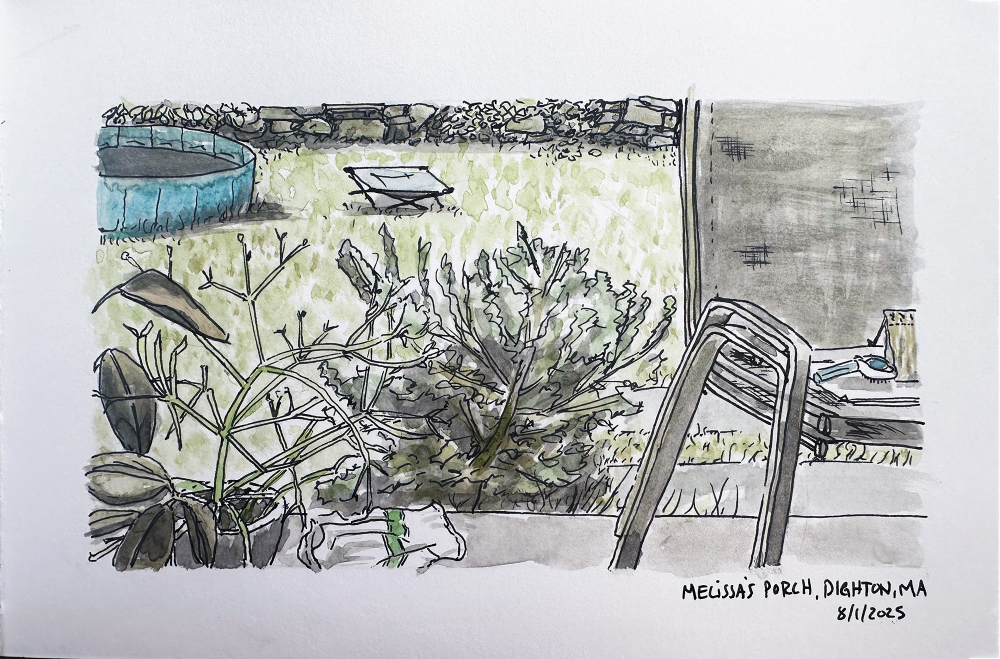

Friend's Homestead
Pen and inkwash drawing of a scene from Dighton, MA.
Two small scenes from a friend’s porch in mass this weekend. The star of the show here, apparently, are house plants. One seemingly leafless and stick-y, another with exaggerated leaves, clearly an out-of-towner.
The family was out for a few hours and I was home with the dogs, so for this one I actually sat and drew what I saw, as opposed to drawing from a photo.
